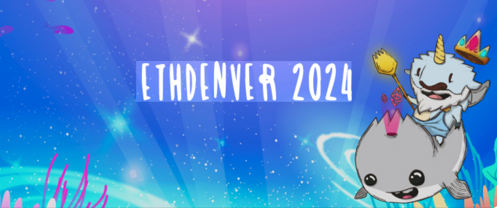

Presentations
DeFiPy has been presented at Web3 events and hackathons focused on on-chain analytics, AMM modeling, and DeFi simulation.
These presentations demonstrate how DeFiPy can be used to explore quantitative properties of decentralized exchanges and liquidity pools.
ETHDenver 2024

Talk: Liquidity Trees — A Framework for Analyzing DeFi Liquidity
At ETHDenver 2024, DeFiPy was used to demonstrate the concept of liquidity trees, a structural representation of how liquidity is distributed across decentralized exchange pools.
Liquidity trees model the relationships between trading pairs and liquidity routes as a hierarchical structure. By organizing pools and token pairs in this way, it becomes possible to analyze:
liquidity distribution across trading paths
capital efficiency within AMM ecosystems
routing behavior across interconnected pools
the structural topology of DeFi liquidity networks
During the presentation, the DeFiPy Python SDK was used to reconstruct liquidity states and explore how these structures can be analyzed programmatically.
This approach illustrates how DeFi analytics can move beyond individual pools toward system-level liquidity analysis.